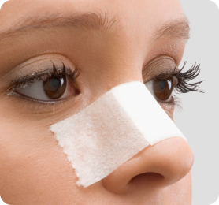

Rhinoplasty Recovery what do you need to know before undergoing the procedure
Rhinoplasty is a surgical procedure that is used to improve the appearance of one’s nose. You can do that in
various ways; most commonly, a rhinoplasty involves reshaping the size, altering the angle, and changing the tip
of the nose. If you want plastic surgery done on your nose, you should consider several things before picking up
and moving to Turkey for rhinoplasty recovery. After all, your health is among the most valuable things you
have! This article will help you learn more about rhinoplasty recovery.
Tips To Speed Up Your Rhinoplasty Recovery Time
Rhinoplasty, or nose reshaping surgery, is a popular cosmetic procedure with high patient satisfaction.
However, there are many things you need to know before and after the surgery to make your rhinoplasty
recovery time more manageable. The following tips will help you recover faster:
1. Listen To Your Doctor
Before you undergo rhinoplasty surgery, you must consult your doctor about the rhinoplasty recovery
process. They will advise you on how long you should wait before returning to work or exercise and what
type of activity is safe during your rhinoplasty recovery period. They also may recommend wearing a nose
splint to protect the nose from injury.

2. Listen To Your Body
You must listen closely to your body during your rhinoplasty recovery period. If there are any signs of
infection, such as redness around the incision site or the kind of pain that does not go away after taking
pain medication, contact your doctor immediately so they can prescribe further treatment if needed (for
example, antibiotics). In addition, check with your surgeon immediately if you experience swelling in other
parts of your body (such as the face). That could indicate an allergic reaction to anesthesia or
postoperative medications such as narcotics (painkillers).
3. Keep Your Head Elevated
The first few days after surgery, keep your head elevated when lying down (on pillows) as much as possible.
That helps prevent swelling and fluid buildup in the nose, which can cause pain and discomfort.
4. Use Cold Compresses
during your rhinoplasty recovery, apply an ice pack or cold compress to your face several times each day
while the swelling is still present (usually the first week after surgery). The cold helps reduce swelling
and bruising by constricting blood vessels in the skin and tissue underneath it. It also relieves pain by
numbing nerve endings in tissues around the area being treated with ice packs or cold compresses.
5. Get Plenty Of Rest
You may be tired during the rhinoplasty recovery period, but it is essential to get plenty of rest, and this
will help you recover faster and get back on track with your daily routine. If you have to go out, make sure
that you wear a hat and sunglasses to prevent UV rays from damaging the newly operated nose area.
6. Maintain A Healthy Diet
After the surgery, you might experience some bleeding in your throat or nose. That can be controlled by
eating a healthy diet rich in iron-rich foods like spinach, broccoli, beans, lentils, etc. You can also take
iron supplements to absorb iron in your body better.
7. Stay Cool
During the first few days of your rhinoplasty recovery period, you may feel you have a cold or the flu. That
is normal because of all the swelling in the nose during this time. To prevent unnecessary complications
from this swelling, keep your head elevated above the heart level for at least two weeks after surgery. In
addition, it would be best to avoid hot showers or baths for the same amount of time because the heat will
increase blood flow to the area and cause more swelling.
8. Don’t Blow Your Nose.
During your first week after surgery, do not blow your nose too hard or too often because it can cause
bleeding inside the nasal cavity and dislodge any sutures that may be present inside your nose at this
point.”
RHINOPLASTY RISKS
Rhinoplasty is one of the most popular cosmetic procedures in the world today. It can be performed
under local anesthesia or general anesthesia. The most common rhinoplasty risks associated with nose
job surgery include:
1. Nosebleeds
Nosebleeds are typically caused by trauma to the area during surgery or from bumping into something
hard after surgery has been completed. Bleeding can also occur due to poor blood circulation in
patients who smoke heavily before and after surgery. You can reduce these rhinoplasty risks by
avoiding smoking for at least one month before and after surgery takes time for scar tissue to heal
properly.
2. Permanent nerve damage
The tip of your nose contains nerves that help you feel your way around while eating, drinking, kissing,
and smelling. When you undergo rhinoplasty, there is a chance that these nerves can get damaged during
the procedure, and this can result in permanent numbness to your upper lip or face.
3. Need for a second or third operation
If you plan to undergo rhinoplasty at a low cost in India, make sure that you choose an experienced
surgeon who has done this operation many times before. If not done properly, it can lead to various
problems like breathing problems or bleeding inside the nose, which may require an additional procedure
to fix them up again.
4. Scarring at the base of the nose
The incisions made during rhinoplasty may leave scars on both sides of your nose, and these scars
usually fade over time but may not disappear entirely. Scarring at the base of your nose can make it
difficult to breathe through your nose and lead to infections in this area.
5. Bursting of small blood vessels on the skin’s surface
After surgery, bleeding beneath the skin often occurs when blood vessels burst under pressure from
swelling or bruising caused by an injury or trauma while healing from surgery or an accident. That can
happen during or after surgery and causes redness on your face for several weeks following your
procedure. It can be uncomfortable and irritating but disappear within a few months after surgery.
6. Swelling
Swelling is the most common complication of rhinoplasty and can last for up to 2 weeks after surgery.
Your doctor will provide you with an ice pack to reduce swelling and may prescribe a nasal steroid spray
to help reduce inflammation. In addition, your doctor may prescribe oral pain medication for the first
few days following surgery.
7. Infection
Infection of the surgical site is rare but possible after rhinoplasty. Therefore, it is essential to
keep all sutures clean during the healing process and carefully follow your doctor’s postoperative
instructions. Contact your surgeon or HayatMed Clinic staff immediately if you notice any redness or
swelling around your incision areas.
8. Numbness
Numbness can occur with excessive bleeding during surgery, and numbness may last for an extended period
and may even be permanent in some cases. However, if numbness is present after surgery, it will usually
go away within a few months after the procedure has been completed.